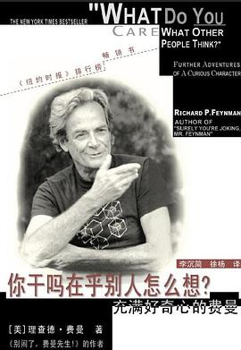

《你干吗在乎别人怎么想？ : 充满好奇心的费曼》

总体观点
人这一生最重要也是最稀缺的自由，就是有勇气对世俗偏见与别人的眼光说一句：‘你干吗在乎别人怎么想？’，永远按照内心的求真法则去生活。
费曼与身患绝症的初恋妻子阿琳的爱情，不仅是一段令人动容的生死挽歌，更是阿琳用生命教会了他彻底摆脱虚荣假面、勇敢直面真实的至高人生哲学。
在面对庞大的国家权力、官僚主义与世俗学术权威时，唯有坚持独立思考、敢于说出‘皇帝根本没穿衣服’的赤诚直白，才能守护真理与科学探索的尊严。
核心观点
-
1. ‘你干吗在乎别人怎么想？’：阿琳教会费曼终生受用不尽的自由咒语
当我们为了迎合别人的赞许、社会的体面而压抑真实想法时，我们已经沦为平庸的奴隶；勇敢做自己，世界反而会向你脱帽致敬。
例 ·阿琳给费曼买了一副滑稽的烤火手套让他戴去学校，费曼起初感到害羞丢人，阿琳笑着反问这句口头禅，彻底砸碎了费曼身上所有虚荣虚伪。 -
2. 至死不渝的真爱：在绝症死亡面前超越世俗利害的崇高契约
明知阿琳身患当时被视为不治之症的淋巴结核，且会面临感染风险与终身医疗重负，年轻的费曼毅然顶住全家反对与她结婚相守至死。
例 ·在曼哈顿工程绝密基地洛斯阿拉莫斯期间，费曼每周借一辆破车往返两百公里去疗养院陪伴病榻上的阿琳，在冰冷的原子弹岁月里守护爱的温度。 -
3. 直面爱人的离世：不故作坚强的哀悼，痛苦终将在日常琐碎中被时间化解
在阿琳离世瞬间费曼并未像电影那样当场嚎啕大哭，直到数月后在橡树岭街头橱窗看见一条漂亮的女士裙子，才突然崩溃蹲在街角泪流满面。
例 ·‘我想她一定会喜欢这条裙子’——这句平淡无奇的念头瞬间击穿了所有的理性防御，展现了人类面对挚爱离世最真实、最深沉的心理痛感。 -
4. 官僚机构的最致命绝症：用‘自欺欺人的公共关系’取代冷酷客观的技术事实
NASA高层为了获得国会预算和政治光环，主观评估航天飞机失事概率为‘十万分之一’，而一线工程师根据物理数据评估其实为‘百分之一’。
例 ·在调查挑战者号事故时，费曼发现管理层为了赶在总统国情咨文当天让教师麦考利夫上天，公然无视工程师关于零下严寒会导致橡胶圈失效的警告。 -
5. 科学调查的真谛：绕开涂脂抹粉的官僚中层，直接走到第一线与机械师对话
高级官员在听证会上满嘴官话套话，唯有深入发射台维修车间，跟亲手拧螺丝、焊接火箭喷管的技师喝咖啡，才能拿到第一手真实数据。
例 ·费曼私下约见固体火箭推进器底层工程师，在纸巾上记录真实橡胶圈烧蚀数据，以此为铁证彻底粉碎了NASA高层编造的技术安全神话。 -
6. 人类思想的尊严在于：承认不确定性，在怀疑中勇敢保持前行
对真理的追求永远处于演进之中，科学家最重要的品德是坦白承认自己‘目前还不完全懂’，绝不给公众提供廉价的虚妄确信。
例 ·费曼在国家科学院发表演说，呼吁人类社会保持对各种异见的包容：‘我们不仅要捍卫怀疑的自由，更要将承认无知视为科学探索最宝贵的美德。’
全书结构
-
第一部分 一个充满好奇心的人 · 科学家的养成
费曼深情回顾父亲麦尔维尔对他的早期科学启蒙教育：父亲如何带他在树林中散步，教会他区分“知道一个事物的名字”与“真正理解事物本质”之间的巨大差异，培养其敏锐的观察力与对大自然的好奇心。
例 ·父亲通过鸟儿啄羽毛的真实原因讲解恐龙与寄生虫生态；玩积木时对惯性与物理规律的直观顿悟；不迷信权威的独立思考习惯。 -
第一部分 一个充满好奇心的人 · “你干吗在乎别人怎么想？”
讲述费曼与一生挚爱阿琳（Arlene）刻骨铭心的初恋与婚姻。在阿琳身患当时被视为绝症的淋巴结核时，费曼顶住家庭与社会的巨大压力毅然与她结婚；阿琳的这句口头禅成为费曼毕生打破世俗偏见的精神图腾。
例 ·阿琳在病床上为费曼寄送写着“你干吗在乎别人怎么想”的信笺；阿琳在洛斯阿拉莫斯附近疗养院离世时的悲恸与释怀；费曼如何带着阿琳给予的勇气终生特立独行。 -
第一部分 一个充满好奇心的人 · 简单得就像一二三
记录费曼在康奈尔大学与普林斯顿大学期间的趣味实验与心智游戏：测试自己数数与时间感知的关联、与生物学家打赌蚂蚁如何通过气味辨别方向、自学开锁破译绝密保险柜等轶事。
例 ·心里默数一分钟与同时看书/说话的脑神经差异实验；追踪蚂蚁地毯轨迹破译费洛蒙信息传递；在洛斯阿拉莫斯物理实验室破解全部机密文件柜锁。 -
第一部分 一个充满好奇心的人 · 艺术、信件与生活的色彩
讲述费曼在加州理工学院结识艺术家朋友并自学画画（署名“欧菲”）、打邦戈鼓、破译玛雅象形文字的精彩侧面，收录他与亲友、科学界同行往来的真实书信与画作，展现其立体丰满的生活热情。
例 ·费曼学习素描以理解艺术与科学的共通之美；在脱衣舞酒吧画画引发诉讼时出庭作证；破译德累斯顿抄本中的金星历法天文学数据。 -
第二部分 费曼去华盛顿：调查挑战者号事故 · 准备与入局
详述1986年1月28日挑战者号航天飞机发射73秒后爆炸解体震惊世界后，身患癌症晚期的费曼受邀加入罗杰斯总统调查委员会的前因后果，以及他下定决心不充当官僚橡皮图章的调查誓言。
例 ·妻子格温妮斯鼓励他前往：“如果你不去，他们只会照本宣科，什么也查不出来”；初到华盛顿面对官方通报会议的官僚作风深感怀疑。 -
第二部分 费曼去华盛顿：调查挑战者号事故 · 冷酷的事实与致命冰水
记录调查的关键突破：费曼拒绝被官方行程牵着鼻子走，私下深入工程师一线寻找线索；在电视直播的全国听证会上，费曼利用一杯冰水与C型夹，当众演示O型橡胶密封圈在低温下丧失弹性的惊人真相。
例 ·宇航员库蒂纳将军隐秘提示温度对密封圈的影响；电视直播现场将O型圈浸入冰水两分钟后展示其硬化变形；无可辩驳地直击导致航天飞机解体的硬伤。 -
第二部分 费曼去华盛顿：调查挑战者号事故 · 官僚谎言与最终报告
深入揭露NASA管理层为了发射进度与政治宣传，如何系统性压制工程师的严重警告，并在安全风险概率上自欺欺人（管理层宣称失事概率十万分之一，而一线工程师评估为百分之一）；费曼坚持在最终官方调查报告中保留其个人独立附录（附录F）。
例 ·罗杰斯委员会试图淡化报告中的管理体制漏洞；费曼以退出委员会相威胁要求完整刊印独立附录；航天飞机主发动机涡轮叶片裂纹的隐瞒真相。 -
尾声 科学的价值
收录费曼1955年在美国国家科学院发表的传世演讲《科学的价值》，高屋建瓴地论述科学不仅是强大的知识工具与心智享受，更是“承认自己的无知与保留怀疑自由”的谦逊哲学，告诫世人警惕教条主义。
例 ·科学作为开启天堂或地狱大门的钥匙；怀疑的自由是人类探索未知最宝贵的特权；“为了现实能够成功，真相必须凌驾于公众形象之上，因为自然是不可能被愚弄的”。